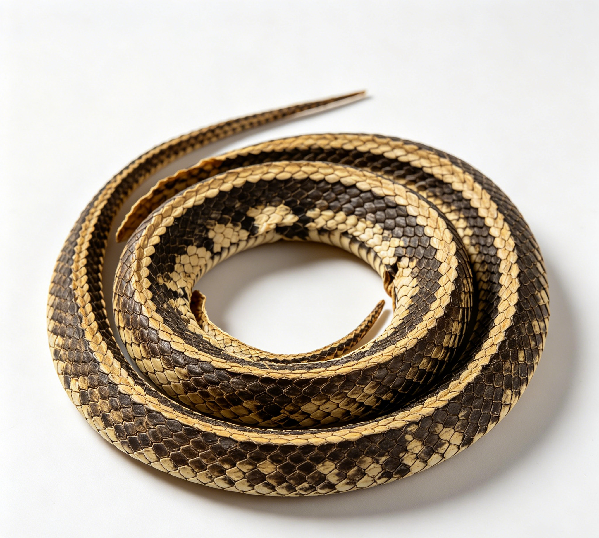

📋 基本信息
中文名乌梢蛇
拉丁名Zaocys dhumnades
英文名Zaocys Dhumnades
产地科属划分：动物界脊索动物门爬行纲有鳞目，游蛇科Colubridae，乌梢蛇属Zaocys；药典基原为乌梢蛇Zaocys dhumnades（Cantor）。主产地：主产于浙江、江苏、安徽、江西、福建、湖南、湖北、广东、广西、四川、贵州、云南等长江以南各省区，以浙江、江苏、安徽产量较大；多于夏、秋二季捕捉加工，现多依赖合法养殖。
性状本品呈圆盘状，盘径约16cm。表面黑褐色或绿黑色，密被菱形鳞片；背鳞行数成双，背中央2～4行鳞片强烈起棱，形成两条纵贯全体的黑线。头盘在中间，扁圆形，眼大而下凹陷，有光泽。上唇鳞8枚，第4、5枚入眶，颊鳞1枚，眼前下鳞1枚，较小，眼后鳞2枚。脊部高耸成屋脊状。腹部剖开边缘向内卷曲，脊肌肉厚，黄白色或淡棕色，可见排列整齐的肋骨。尾部渐细而长，尾下鳞双行。剥皮者仅留头尾之皮鳞，中段较光滑。气腥，味淡。【《中国药典》2020年版一部】
用法用量6～12g。【《中国药典》2020年版一部】
贮藏置干燥处，防霉，防蛀。【《中国药典》2020年版一部】
☯ 传统属性
四气平
五味甘
归经肝经
功能主治祛风，通络，止痉。用于风湿顽痹，麻木拘挛，中风口眼㖞斜，半身不遂，抽搐痉挛，破伤风，麻风，疥癣。
禁忌症《中国药典》未列注意事项。本草文献记载：血虚生风者慎服；本品性善走窜，阴虚血燥者不宜单独使用；孕妇慎用。【《中华本草》】
毒性常规剂量（6～12g）安全性较好，少见明显毒性报道。偶见过敏反应（皮疹、瘙痒），过敏体质者慎用；过量服用可致恶心、呕吐等消化道不适。蛇肉未充分煮熟有寄生虫（如裂头蚴）感染风险；野生个体可能富集重金属或携带病原体。乌梢蛇为国家保护的有益或有重要经济、科学研究价值的陆生野生动物（'三有'动物），应注意来源合法性。
适宜体质血瘀质
适宜证型血瘀证、气滞血瘀证
🔬 现代研究
主要成分乌梢蛇含大量蛋白质与多肽类（蛇肉蛋白、胶原蛋白）、多种氨基酸（含人体必需氨基酸）、脂肪及脂肪酸、骨与软骨成分（钙、磷、硫酸软骨素类）、核苷类成分（次黄嘌呤、尿嘧啶、鸟嘌呤、黄嘌呤、肌苷、鸟苷等，为药典配方颗粒标准质控指标）、微量元素（锌、铁、铜、锰、硒等）及蛇血清中的抗蛇毒因子。代表性成分以蛋白质多肽类、核苷类（次黄嘌呤）为主。
药理作用已报道的药理活性：（1）抗炎镇痛：乌梢蛇水煎液、醇提物对多种实验性炎症模型有抑制作用，能提高痛阈；（2）镇静、抗惊厥：醇提取液对戊四氮所致小鼠惊厥有抑制作用，对电刺激惊厥有一定对抗作用；（3）祛风通络：与传统功效相符的抗炎、抗风湿作用研究见于佐剂性关节炎模型；（4）抗蛇毒：乌梢蛇血清中含抗尖吻蝮蛇毒的因子；（5）免疫调节、抗过敏（对麻风、疥癣等传统主治相关的抑菌、调节免疫作用）等。上述多为动物实验结果，临床应用应遵医嘱。
食疗功效传统食疗认为乌梢蛇甘平入肝，善祛风除湿、通络止痉，民间用于风湿性关节炎、类风湿、肢体麻木、皮肤瘙痒等的药膳调理，如乌梢蛇炖汤、蛇肉粥、三蛇酒等，取'以形治形、以风治风'之意。现代营养学角度，蛇肉属高蛋白、低脂肪、低胆固醇肉类，含多种氨基酸与微量元素，可为体虚者补充优质蛋白。食疗仅作辅助，相关疾病应规范就医。
食养禁忌
🏭 产品形态与潜在功能
推荐形态
粉末胶囊提取物
潜在功能